Welcome to UniSim, a university campus simulation game where you design your ideal campus! Place essential buildings - from lecture theatres to halls and dining areas - to create a functional and engaging campus. Your goal is to maximise student satisfaction by making strategic choices and responding to events on campus, all within a five-minute window.
Screenshots
Our Team

Hussain Alhabib
Risk Assessment and Mitigation Lead
Quality Assurance
Ellen Matthews
Requirements Lead
Secretary
Minnie Poon
Method Selection and Planning Lead
Report Editor
Jason Ruan
Architecture Lead
Project Lead
Daniel Smith
Website Lead
Secretary
Owen Smith
Implementation Lead
Head Developer
Week 1 (w/c 23/09)
There is no weekly screenshot for Week 1, as our objective was to get to know our team members and begin understanding the assessment brief.
Week 2 (w/c 30/09)
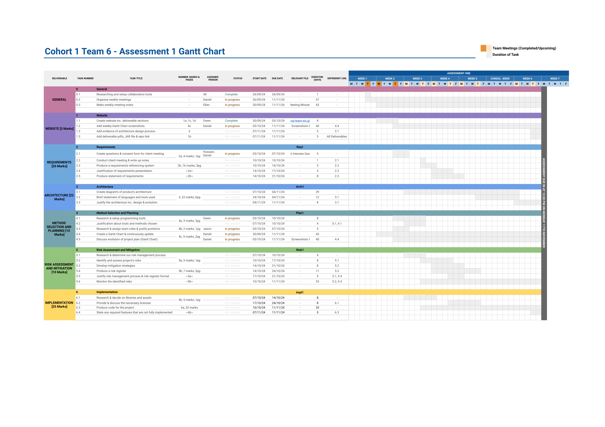Week 3 (w/c 07/10)
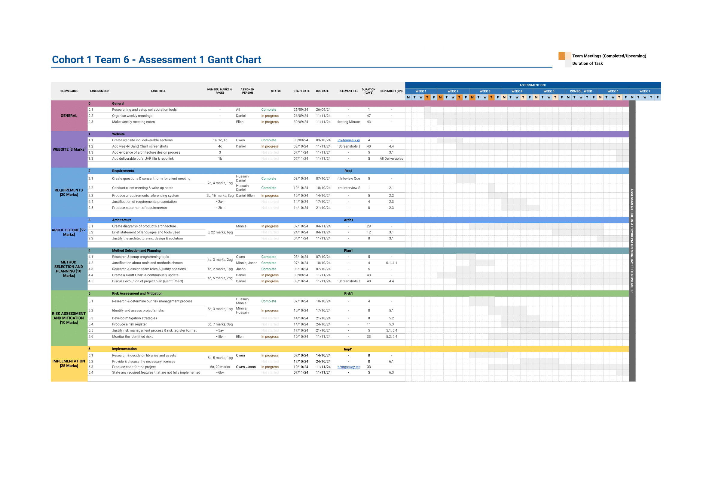Week 4 (w/c 14/10)

Week 5 (w/c 21/10)
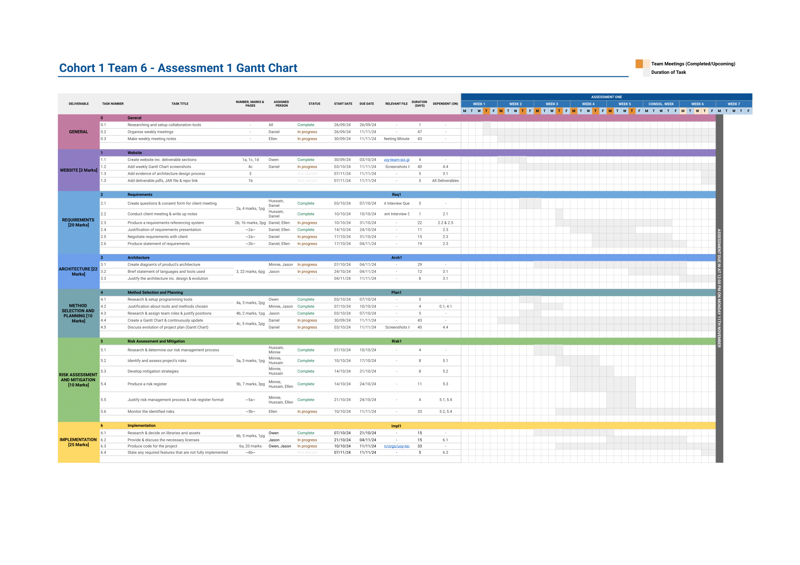Consolidation Week (w/c 28/10)
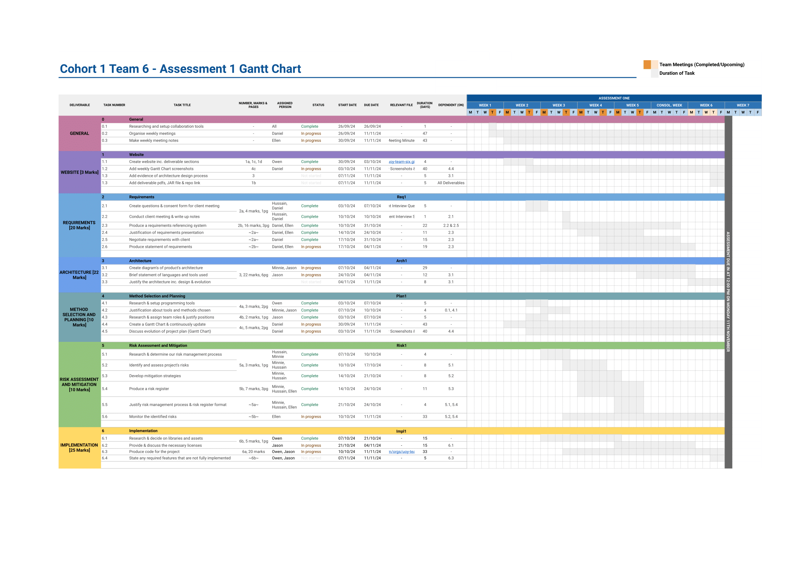Week 6 (w/c 04/11)
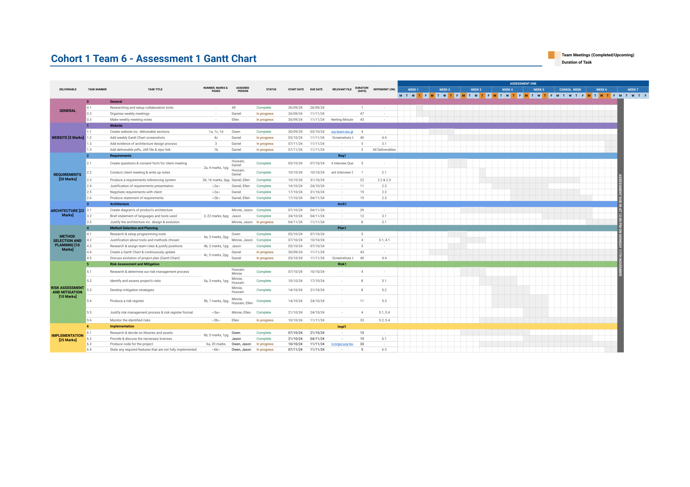Week 7 (w/c 11/11)
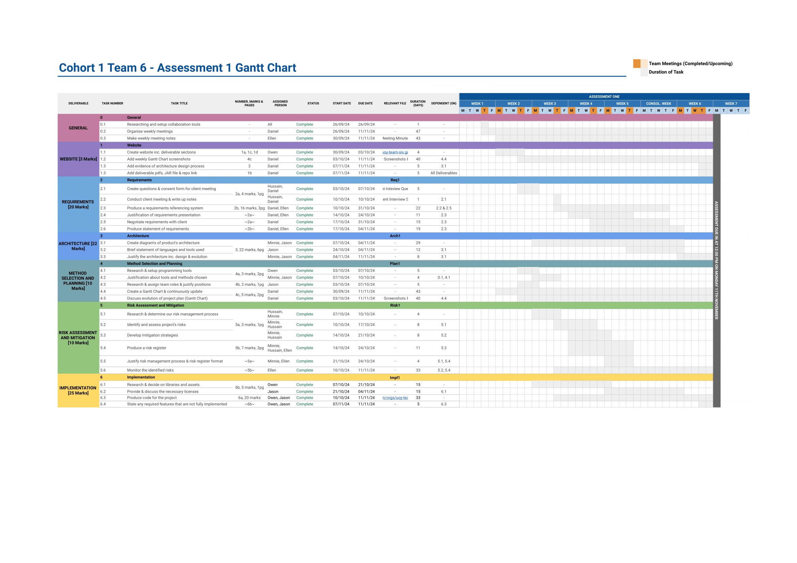This section presents our architecture diagrams in sequence, from Iteration 1 to Iteration 6, followed by the final architecture diagram and the activity diagram.
Iteration 1: Setup of Textures Module

Iteration 2: Introduction of Screens Module
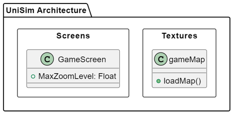Iteration 3: Adding Core Mechanics
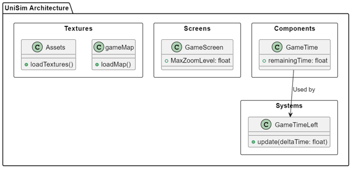Iteration 4: Building Placement and Collision Features
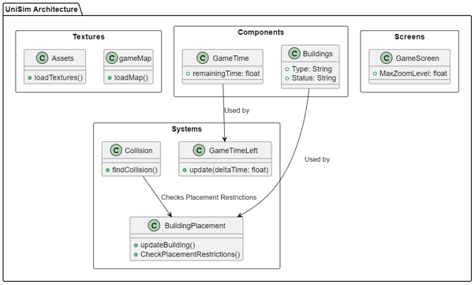Iteration 5: UI Enhancements
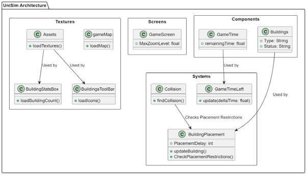Iteration 6: Scoring Functionalities
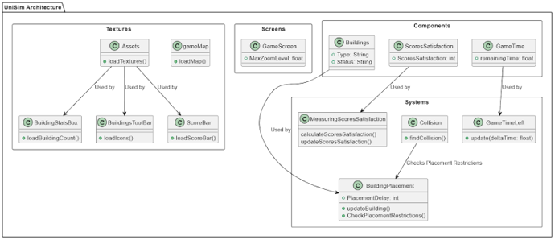Our Final/Current Architecture
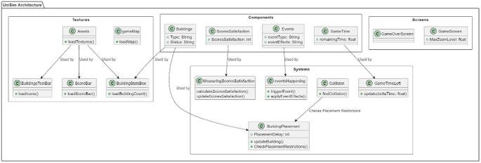Our Activity Diagram
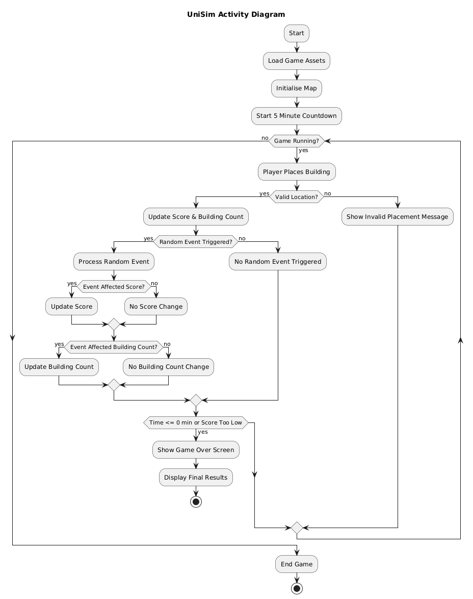Requirements
Link to Req1: Req1.pdf
Architecture
Link to Arch1: Arch1.pdf
Method Selection and Planning
Link to Plan1: Plan1.pdf
Gantt Chart: Our Final Gantt Chart
Risk Assessment and Mitigation
Link to Risk1: Risk1.pdf
Implementation
Link to Impl1: Impl1.pdf
JAR File: unisim-1.0-all.jar
GitHub Release: Version 1.0
GitHub Repository: unisim